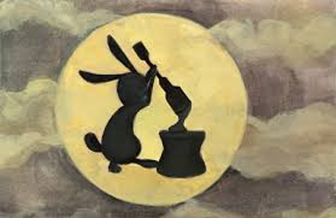

About: The Mid-Autumn Festival occurs at the time of the full moon. It is a time for eating mooncakes, holding family reunions, and gazing at the round moon while thinking of the story of Chang’e, the goddess who resides in the moon.
Date: 15th day of the eighth lunar month
The Moon Goddess In ancient times, ten suns roamed the skies. The overwhelming heat scorched the earth, wilting the crops, boiling the seas, and making the people's lives miserable. Despite this, the ten proud suns continued to occupy the sky, unconcerned with the people's suffering.
Finally one day, an archer named Hou Yi vowed to shoot down the suns in order to end the people's misery. The suns laughed at him, knowing they are too high for him to reach. However, Hou Yi was both skilled and powerful, and proceeded to shoot down nine of the suns. He would have shot down the tenth sun as well, but the people stopped him in time. The last remaining sun was frightened, and since then has dutifully kept to its course. Because of this , the people hailed Hou Yi as a great hero.
Hou Yi did have a fear of death. He traveled to the goddess Queen Mother of the West, and asked for the elixir of immortality. The Queen Mother gave him two small bottles, and told him these were the last two doses on earth.
Hou Yi returned home with the elixir (for some reason he did not drink it immediately). However, over time as he performed other heroic feats, he grew arrogant and tyrannical. His wife, Chang'e, feared that if he gained immortality, he would live on forever to oppress other people. Thus, Chang'e secretly drank all the elixir. However, drinking both bottles proved to be an overdose: not only did Chang'e gain immortality, but her body became so light that she floated to the moon. Chang'e has resided on the moon ever since, kept in company by the Jade Rabbit. On Mid-Autumn Festival, people remember Chang'e and look at the moon, while Chang'e gazes back at earth.
The Jade Rabbit Once upon a time, in the forest lived three friends--a Fox, a Monkey, and a Rabbit. It was a harsh winter and the friends were dying of starvation. The three friends built a fire and decided to go look for food to share with everyone. The Monkey climbed a tree and gathered some fruits. The Fox went to a stream and caught some fish. The Rabbit, however, only could gather grass, which he knows his two friends do not eat. When the three friends met back at the fire, the Monkey with the fruits and the Fox with the fish, the Rabbit said to his friends, "I know I have nothing to give you to eat. Therefore, eat my body as meat." With that, the Rabbit leaped into the flames and offered himself.
The gods were so touched by Rabbit's sacrifice, they decided to immortalize the Rabbit by resurrecting him and letting him live on the Moon. Since then, the Rabbit lives on the moon and spends his time pounding rice cakes with a pestle and hanging out with Chang'e the Moon Goddess.
Wu Gang and the Laurel Tree Once upon a time, there was a man named Wu Gang who wanted to live forever. He found a teacher in the mountains to teach him the secret to immortality. (In Chinese legends, in those days wise people usually lived in the mountains for some reason). The old man tried to teach him to heal, but Wu Gang has no patience and gave up after three days. The teacher then tried to teach him chess, but Wu Gang gave up after two days. Finally, the teacher tried to teach him about eternal life, but Wu Gang gave up after one day. Finally, the teacher told Wu Gang, "On the moon is a laurel tree, if you succeed at chopping it down, you will become immortal." Wu Gang happily took up an ax and started chopping. When he was about three quarters finished, however, he grew tired and decided to take a nap. When he awakened, the tree looked like it had never been cut! Wu Gang took up the ax and resumed chopping. When he was almost done, he rested again. When he finished resting, the tree once again looked whole and untouched! Turns out the tree can regenerate. Every time Wu Gang stops to rest, the tree heals itself. Wu Gang has been on the moon ever since, endlessly chopping the laurel tree.
Family Reunions The roundness of the full moon symbolizes unity, therefore on the night of Mid-Autumn Festival, it is traditional to hold family reunions. Extended families would often gather together and eat a meal under the sky while gazing at the moon. If someone is unable to reunite with their families, then they can look to the sky and think that at least their loved ones are also gazing at the same moon.
Mooncakes During the Yuan Dynasty, China was under oppressive rule by the Mongols. The Mongolians were strict and did not allow Chinese to access or manufacture weapons. Discontent among the Chinese was brewing, but the people were unable to communicate their desires and plans for rebellion under the Mongols' watchful eyes. Finally, one day someone named Liu came up with an idea to plan rebellion while escaping detection. He had mooncakes distributed to all families of China. Inside the mooncakes were messages that stated "Rebell on the 15th day of the eigth month." The coordinated rebellion was a success, and the Mongols were overthrown and a new dynasty established
Nowadays, mooncakes are stuffed with different fillings such as egg yolk, red bean paste, lotus seed paste, date paste, etc. They often have Chinese characters engraved on the outside that signify the flavor inside.